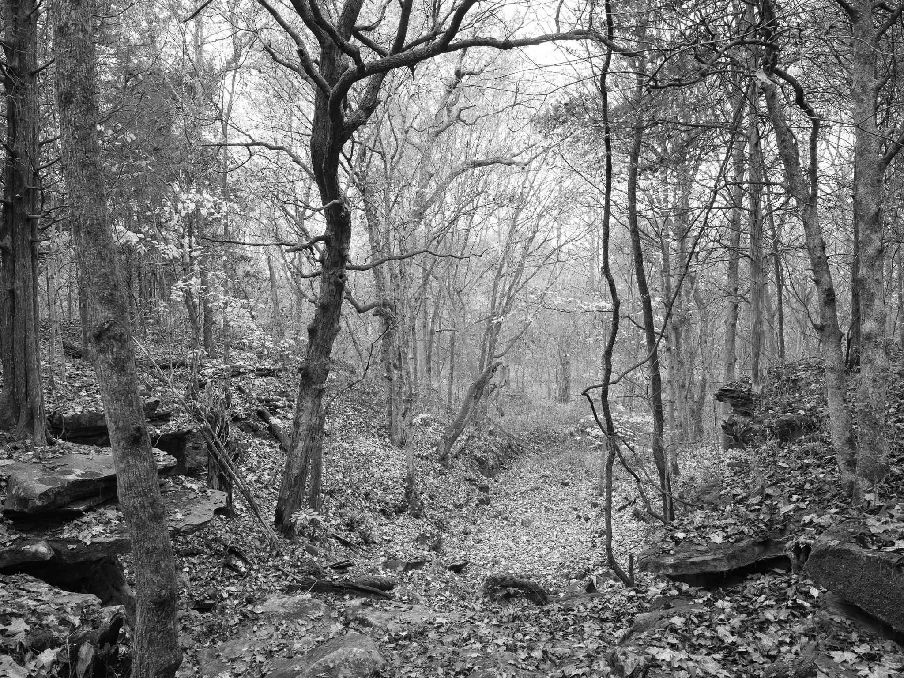
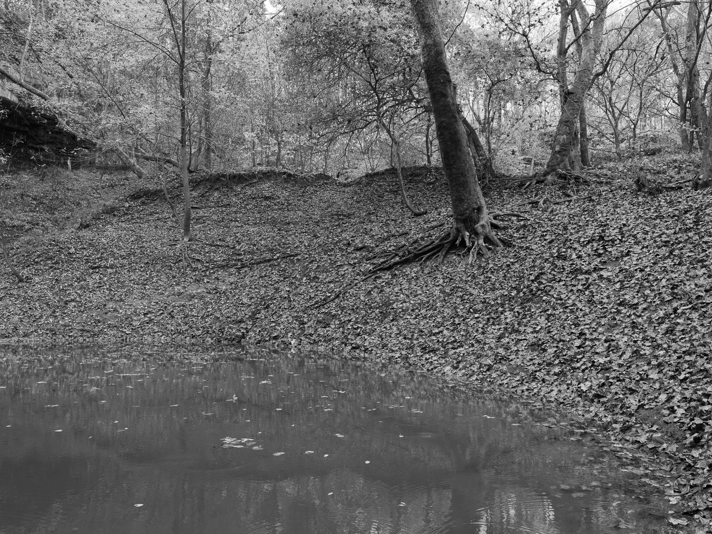
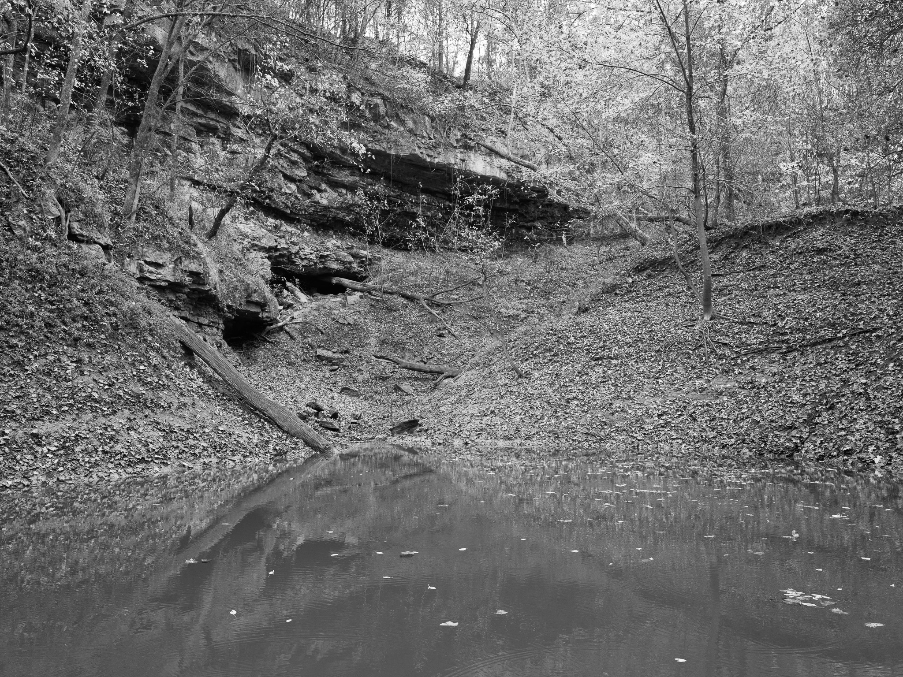
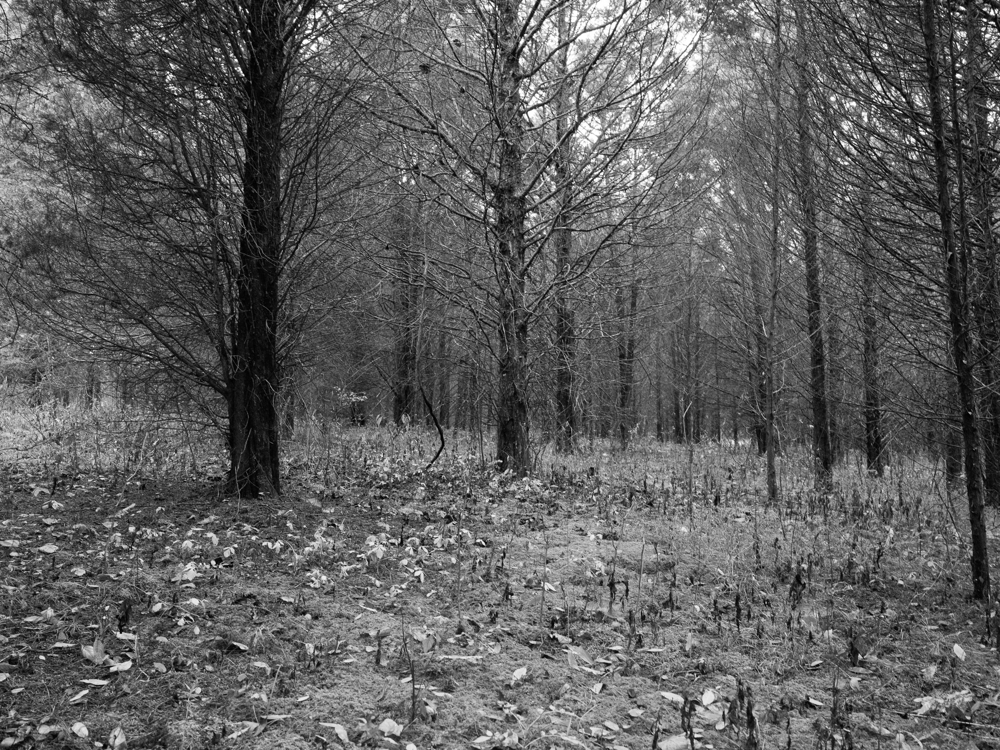

Public Lands Institute
Map
Images
Archive
About
Support
Wesley Chapel Gulf
IN

Wesley Chapel Gulf 1 · 2026-11-02
_DSF4834.jpg

Wesley Chapel Gulf 2 · 2026-11-02
_DSF4837.jpg

Wesley Chapel Gulf 3 · 2026-11-02
_DSF4838.jpg

Wesley Chapel Gulf 4 · 2026-11-02
_DSF4846.jpg
View all 4 images →
← Hemlock Cliffs
Spring Mill State Park →